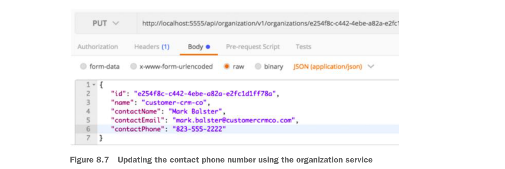
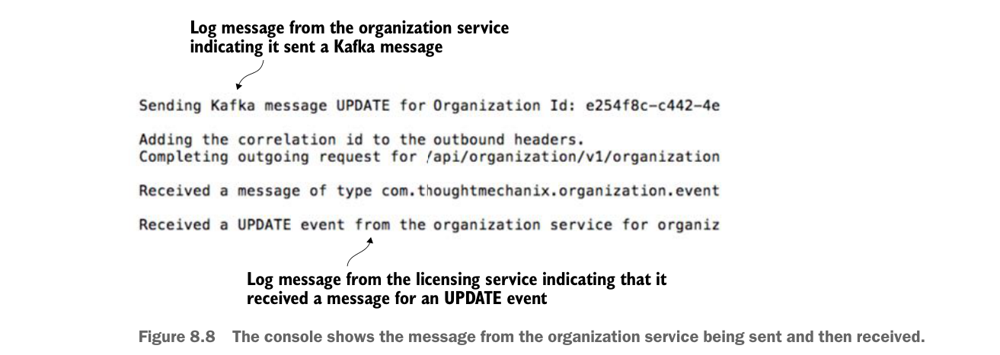

Để cập nhật bản ghi organization service, bạn sẽ gửi một PUT tới organization service để cập nhật số điện thoại liên hệ của organization. Endpoint bạn sẽ dùng để cập nhật là http://localhost:5555/api/organization/v1/organizations/e254f8c-c442-4ebe-a82a-e2fc1d1ff78a. Phần body bạn sẽ gửi trong lời gọi PUT tới endpoint đó là
{
"contactEmail": "mark.balster@custcrmco.com",
"contactName": "Mark Balster",
"contactPhone": "823-555-2222",
"id": "e254f8c-c442-4ebe-a82a-e2fc1d1ff78a",
"name": "customer-crm-co"
}Hình 8.7 cho thấy đầu ra trả về từ lời gọi PUT này.

Cập nhật số điện thoại liên hệ bằng organization service
Sau khi lời gọi organization service đã được thực hiện, bạn sẽ thấy đầu ra sau trong cửa sổ console đang chạy các service. Hình 8.8 cho thấy đầu ra này.

Console hiển thị message từ organization service được gửi rồi nhận lại.